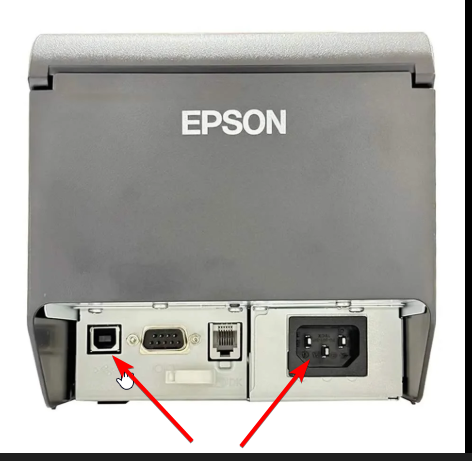
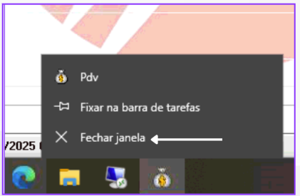
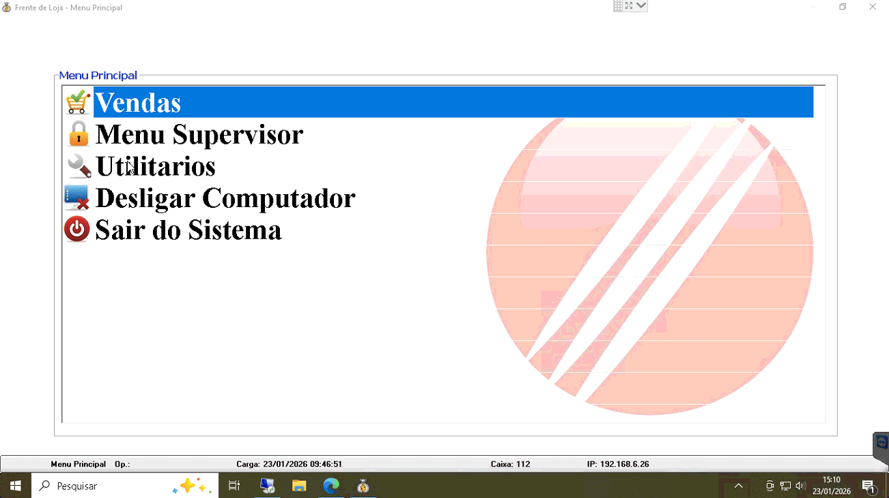

PDV não imprime cupom ou está com Lentidão
Passo a Passo para resolver:
- Passo 1: Verifique se a Impressora está Ligada.
- Passo 2: Confira se os cabos estão bem conectados a impressora.
- Passo 3:Retire o cabo da impressora da porta usb do computador e coloque em outra entrada usb.
- Passo 4: Verifique se a impressora está com papel e se o papel foi colocado corretamente.
- Passo 5: Feche o app do PDV dessa forma.
- Ou feche pelo Gerenciador de tarefas.
- Passo 6:Abra novamente o pdv e tente executar uma venda.
- Caso isso não resolva, antes de entrar em contato com o TI reinicie a maquina



Nota: Se após esses testes não Resolver, abra um chamado técnico informando o que já
foi feito no Grupo do TI.